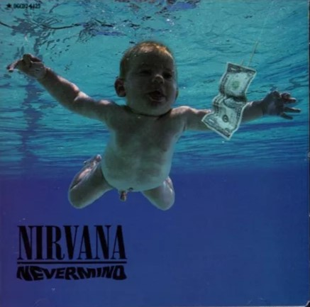

Titulo del album
:
Año del album
Descripción
Nevermind catapultó a Nirvana de la relativa oscuridad mediática a las alturas del éxito comercial y crítico prácticamente de la noche a la mañana. El álbum atrajo una atención significativa al movimiento grunge con sede en Seattle que dominó durante la mayor parte de la década 1990. A raíz de su éxito, otras bandas de Seattle como Pearl Jam, Soundgarden y Alice in Chains también llegarían a tener álbumes de éxito, y otros artistas de rock alternativo de repente estaban siendo transmitidos en las radios y cortejados por sellos discográficos importantes. Nevermind fue producido por Butch Vig y mezclado por Andy Wallace, quien creó las guitarras distorsionadas de la banda, la batería, el bajo retumbante y la voz catártica en un álbum que atrajo a una amplia audiencia y estableció el estándar para la música rock durante la década 1990. El cantante y guitarrista Kurt Cobain expresó más tarde su descontento con la producción "ingeniosa" y "amigable para la radio" de este álbum, pero también admitió en la biografía de Nirvana de 1993 de Michael Azerrad, Come As You Are: The Story of Nirvana, que escuchar el álbum a veces lo conmovía hasta las lágrimas. Nevermind alcanzó el número 1 en los 200 álbumes principales de Billboard Music Chart y en la lista Heatseekers. Fue votado como el mejor álbum del año en la encuesta de críticos de The Village Voice Pazz & Jop. En 2004, fue una de las 50 grabaciones elegidas ese año por la Biblioteca del Congreso de Estados Unidos para agregarse al Registro Nacional de Grabaciones. Nevermind figuraba en el puesto 17 en los 500 mejores álbumes de todos los tiempos de la revista Rolling Stone, a pesar de que solo obtuvo cuatro estrellas de cinco cuando fue reseñado originalmente para esa misma revista en 1991. Nevermind fue certificado como álbum de oro y platino por Recording Industry Association of America el 27 de noviembre de 1991.